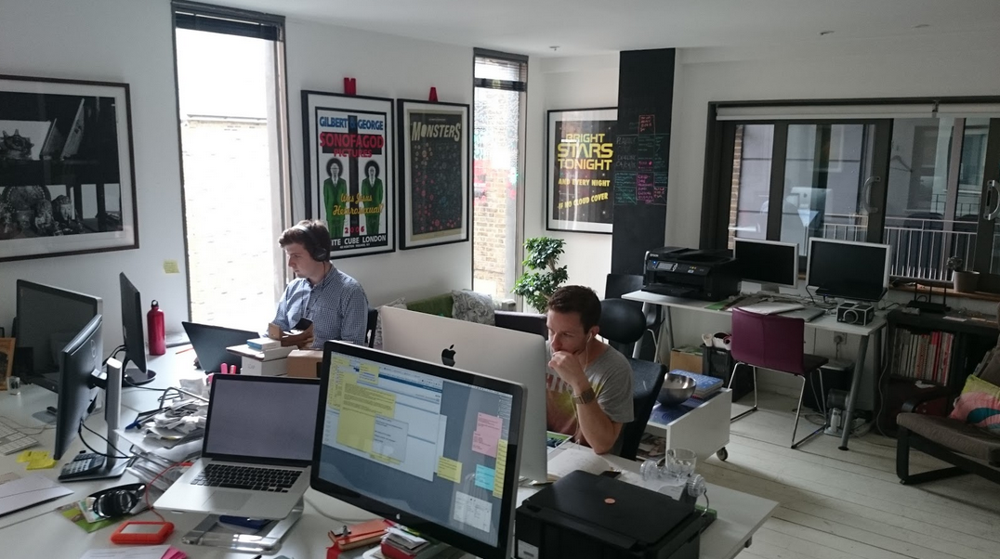

ODI summer showcase: Working with Mental Health
We chat with Martin Vowles, Director of M/A, about his ideas behind winning summer showcase project Working with Mental Health, and what he has in store

Working with Mental Health will create an open web app to showcase the support, services and opportunities that surround its users.
Hi Martin! You are looking to help people with mental health conditions get back into work using open data. Tell us more about your idea
Plexus helps sufferers of mental health conditions to understand the accessible support structures around them. It also helps them find possible routes back into employment having been signed off, left a previous job, or looking for their first job.
Sufferers of mental illness conditions who have been signed off for extended periods of time can find it difficult and intimidating to get back into employment. Plexus aims to support and guide them through the process, identifying local support and how to access it, giving them information about their employer’s responsibilities and their legal position, as well as showcasing local volunteering opportunities.
Underpinning Plexus is our release of national charity Mind’s first open dataset, giving accurate details of the mental health programmes and services run by local Minds across England and Wales.
Over the past 18 months we have been working with Mind on a knowledge hub. We have seen the amazing work they do across England and Wales and believe that more people need to be aware of the services they provide.
Sounds interesting! What gave you this idea?
I’ve seen firsthand how hard it was for a family member suffering from a mental health condition to stay in, and later return to, employment. It took nearly four years for them to be able to return to work full-time, and this was only possible after leaving their original place of work. It was clear to see the multiple effects this had on their family and friendship group, ranging from financial and emotional, to social and psychological. More support and a better understanding of their rights would have made this process much easier for them.
When did you first get excited about open data?
I’ve always been interested in data. During my master’s degree at the Royal College of Art, I created a number of projects taking data from the ‘War on Terror’ and using stark visual representations to demystify the numbers and statistics being used by the media – taking things that are quantifiable and making them easier to understand. In 2004 I attended the inaugural Nesta Pioneer Programme where Chris Downs, co-founder of live/work, told us that ‘data is the new oil’. This resonated with me over time and has helped inform my approach to data in my current work.
More recently, data.gov.uk has shown what can be achieved in a relatively small timeframe by releasing data, and the amazing array of projects and applications that the release has facilitated.
Where do you see open data in 10 years?
I think there will be three key developments. First, I think there will be an increased public understanding of what open data is, the difference between open and personal data, and how it can be used in positive and productive ways. This will shake up what the public will allow companies and organisations to do with their data, as they recognise the value it has to others and why companies want it.
Second, more high-quality open datasets will be widely available, and these won't necessarily be coming primarily from government or public bodies.
Finally, more people will use open data in their day-to-day lives. I believe open data will be integrated heavily with the Internet of Things. For example, electrical appliances in your home or office may prompt you to change your electricity supplier based on cost or environmental factors.
What are your plans for your project, and how will you achieve them?
We intend to create an open web app which merges data from Mind, the NHS, the Department for Work and Pensions and a volunteering platform. The app will use geolocation to showcase the support, services and opportunities that surround users, which can be filtered by distance and interests. As part of the project, we will publish Mind’s first certified open dataset. We intend to work closely with them beyond the showcase to extend their data to include service-user numbers, diversity statistics and areas of operation.
We expect users of the application to gain an understanding of the positive effect that having or getting back into employment can have on their wellbeing, through shared experiences and case studies.
To continue to improve Plexus, we will analyse user data to understand how people have used and accessed the data within the app. We will also monitor how this has led them to make point of contact with supporters and employers or gain a greater understanding of their rights.
**Update The full story of Plexus' development can be read here
The ODI summer showcase commissions open data projects with tangible economic, social or environmental impacts. Find out more here.
If you have ideas or experience in open data that you'd like to share, pitch us a blog or tweet us at @ODIHQ